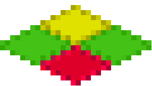

|
|
Isometric FAQ
General FAQ | Isometric FAQ
Using Kyra for an Isometric view is popular enough to warrant its own notes.
Overview
The BEM demo:

is an isometric view. Isometric views tend to be more popular on PCs, especially. They are harder to work with, but can make for some spectacular quasi-3D graphics.
Isometric views require lots of animation frames. The Drone BEM can walk in 4 directions, with 6 frames of animation in each direction. Since there is a light source, none of the images are symmetric. So isometric views tent to be content-heavy.
Tiles, generally speaking, are not useful in isometric views. That said, the "space scene" is also a tiled background, so they have their place. But none of the room or character graphics are tiles.
Stitching Tiles
Before rendering, you need to decide on how to "stitch" the tiles together. There are many ways to do this, but the BEM tiles use the following rules:
- Edges are at a 1 to 2 rise to run ratio.
- Top corners meet, side corners do not.
- The center needs to be chosen consistently. The top and left of the 4 possible "middle" pixels, for instance.

The rules applied to 4 colored tiles are shown above. There are other valid rules; this just happens to be the one the BEM chooses. Note that the "mathematical" width of the sprite is 2 pixels wider than the image width, and the mathematical height is 2 pixels smaller than the image. See 'BemGame::MapToScreen' for a mapping from map coordinates to screen coordinates.
When rendering or drawing the graphics, you need to be careful in the placement of the camera in order to get the correct edge angle.
While cleaning up the graphics, it is important to make sure you have good clean edges so the tiles match up correctly. This is a tedious aspect to working with isometric views. Keep some templates around to help you clean up the images. For example, in the picture above, almost all tiles will be clipped by the 2 bottom white triangles that are the negative space of the image. So repeated shapes can be pasted in to the image to clip it. The top edge is harder; as many shapes will extend upwards and the top edge sometimes has to be "hand clipped."
Depth Sorting
Depth sorting of isometric images is performed in increasing world Z, with sprites at the same world Z sorted based on the screen Y value of their center point. (A little strange, granted, but works.) The BEM demo has 2 Z depths: 1) the floor and 2) everything standing on the floor. The 2 depths are simply sorted into 2 ImNodes which are then sub-sorted. Everything inside is ZDepth sorted based on 'actor[i].sprite->Y()'. The hotspots of the sprites are set between their feet.
Another Example of Depth Sorting
An example came up, for a fantasy game, of how to sort the following:
- An Orc in a room.
- A table.
- A vase on the table.
Assume the floor is flat.
Start by considering basic relationships. In 3D space, the orc and table will always be at a higher 3D-Z than the floor, since they're standing on it. This implies that in any visual representation, the table and the orc will *always* be drawn on top of the floor. There are 2 levels to this example:
- The floor.
- The things on the floor.
So in an isometric space, the orc and table are in a higher z-range or in a higher layer than the floor. The trick becomes (in isometric space) what is the z-depth of the orc vs. the table, but the floor is irrelevant. So consider then the orc and the table. The orc and the table can't be in the same position because that would be visually and physically wrong. It turns out that in an isometric view for objects with a square bounding box, the z-depth within a layer is proportional to the y position in screen coordinates. (Once the idea occurs to you -- and you draw out that rather absurd property on paper -- it actually makes sense visually.) That sorts the orc relative to the table.
Now, the vase. The vase is both hard and easy. Conceptually tricky because the vase and the table are at the same layer: the "things on floor" layer. Hard because the mathematical transformation is fairly gruesome for a quasi-3D engine. Easy if you cheat. Vase is as close to the table as possible. Vase ZDepth = Table ZDepth + 1. In Kyra you could also use containment. If the table is an Image of some kind (likely a sprite), the child images of the table are the things on the table, and it all works out.
Math
An isometric view is a true representation of a 3D world from a particualar camera viewpoint. (A camera an infinite distance away, but that's a mathematical detail.) The class GlIsoMath is provided to assist in 3D to 2D transforms used by the engine.
it is important to note that you are dealing with sprites. (You knew, that, I grant you.) But that has some important side effects: a sprite can usually move from one location to another based on its art. Often you know the screen transformation, and need the new location in 3D space. IsoMath will transform in both directions.